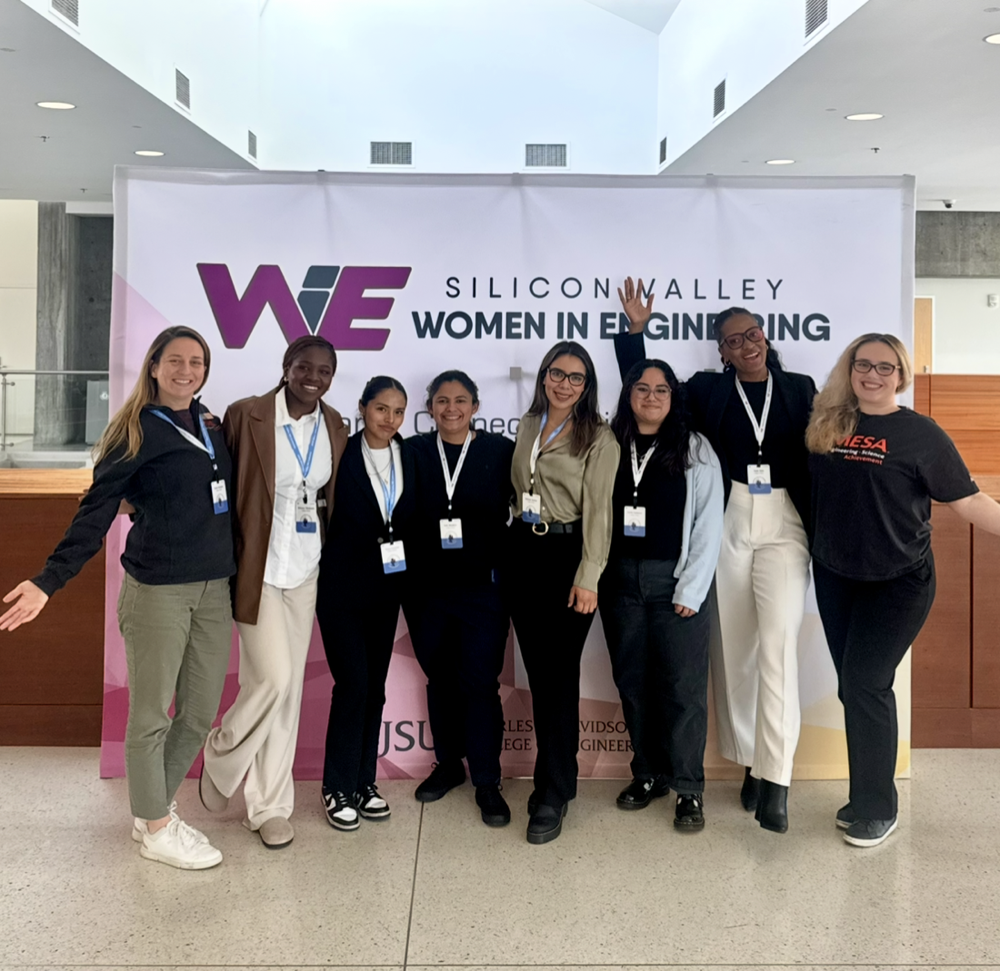

Professional
This section focuses on my professional journey: projects I build, internships and fellowships, and the technical skills I am developing in AI and software engineering.
I document what I am learning, challenges I face, and how I improve as an engineer through real-world experience and collaboration.